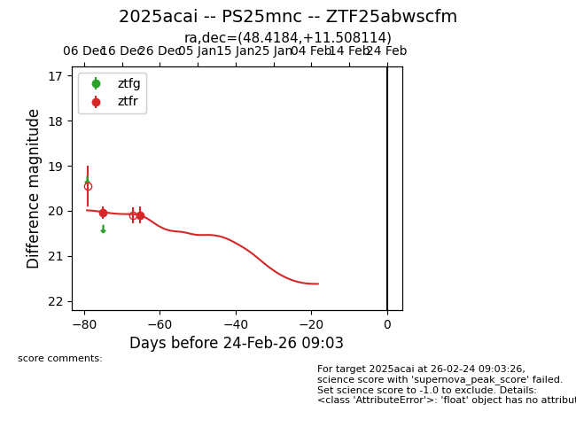
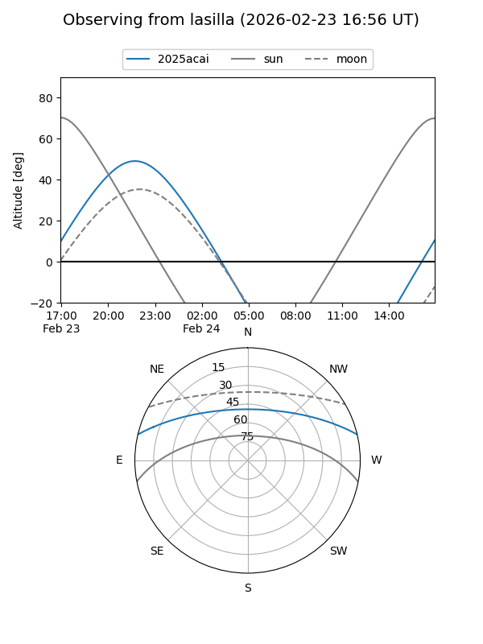
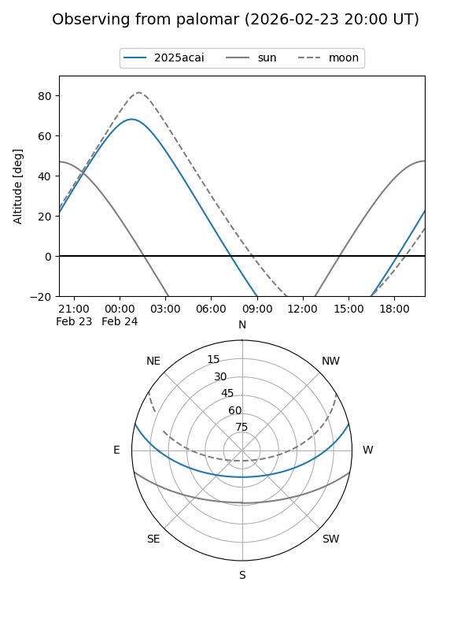
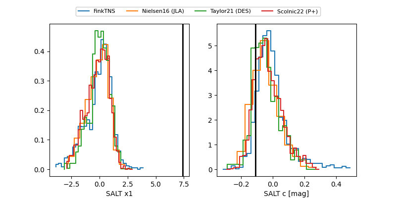

2025acai
Target 2025acai at 2026-01-06 11:06
Aliases and brokers:
FINK:
Lasair:
ALeRCE:
TNS:
YSE:
alt names
ZTF25abwscfm (ztf,fink_ztf)
2025acai (tns,yse)
PS25mnc (panstarrs)
Coordinates:
equatorial (ra, dec) = 48.4184,+11.50811
equatorial (HMS+DMS) = 03:13:40.43,+11:30:29.21
galactic (l, b) = (169.4169,-38.20621)
Flags:
Photometry:
last ztfr=20.09
2 ztfr detections
Lightcurve

Visibility


Additional plots
